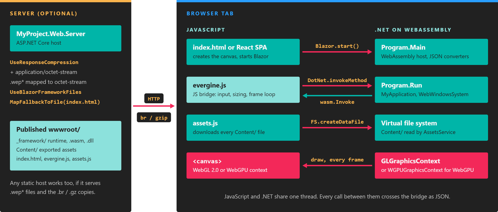

Optimize a web application

A web application pays two costs a desktop application does not: everything it needs is downloaded before it starts, and it runs inside a browser tab with less CPU and GPU budget. The web templates already choose settings for both, but most of the remaining time depends on your content. This page lists the settings that matter, from the ones with the biggest effect.
Know what is downloaded before the first frame
The page does not call Run until assets.js has downloaded every file exported to Content/ into the browser's in-memory file system. The progress bar on the splash screen tracks that download. The total wait is the .NET runtime and your assemblies, plus the whole Content/ folder, plus Initialize of your application.
Open the browser's network panel on a published build to see the real sizes: the _framework files are the code, and the Content/ requests are your assets.
Make textures smaller
Textures are usually most of Content/. The web profiles export them as uncompressed R8G8B8A8_UNorm (4 bytes per pixel), because WebGL 2.0 does not guarantee any GPU-compressed format. HTTP compression helps, but the uncompressed size is also what the GPU memory holds.
In the texture editor, select the web profile and change the texture's profile properties:
| Setting | Use it for |
|---|---|
ScalingType = Percentage with ScaledPercentage = 0.5 |
Halves each side, so the texture is a quarter of the size. Good first step for large albedo and roughness maps. |
ScalingType = Freeform with ScaledWidth and ScaledHeight |
A fixed size, for textures you know are never seen up close. |
ScalingType = PowerOfTwo or SquarePowerOfTwo |
Rounds to power-of-two sizes. |
ExcludeAsset |
Leaves the asset out of this profile entirely. |
Also consider turning off GenerateMipmaps for textures that are always shown at their native size, such as UI images: the mip chain adds about a third to the size.
Tip
Because these settings are per profile, you can keep full-resolution textures for Windows and ship smaller ones to the web from the same project.
Keep shader variants to the ones you use
The web profiles have Compile effects enabled, so every shader variant is compiled at export time and downloaded as part of Content/. The exporter compiles the combinations your materials use, the mandatory ones, and the combinations in the profile's directive list. The web templates add LOW_PROFILE, GAMMA_COLORSPACE, shadow, point light and spot light combinations.
If your scenes never use spot lights, or never use point lights, remove those combinations in Project Settings > Profiles > Shaders (see Manage profiles). Fewer variants mean fewer and smaller effect files.
Publish in Release with compression
A Debug build is much larger and slower than a Release publish, so measure only published Release builds.
- Trimming.
PublishTrimmedistruein Release and removes unused code from the assemblies. - Precompressed files. In Release, Blazor writes Brotli (
.br) and Gzip (.gz) copies of the published files; the templates only disable this (BlazorEnableCompression) in Debug. - Server compression. The template's ASP.NET Core server compresses responses with
UseResponseCompressionand addsapplication/octet-stream, the content type of Evergine assets, to the compressed types. If you use another host, enable compression for that type too.
DevOps shows the full server configuration and the table of project settings.
Compile ahead of time
By default, Blazor runs your .NET code with an interpreter. AOT compilation turns it into WebAssembly when you publish, which makes CPU-heavy code (physics, animation, large scene updates) run much faster. The trade-offs are a larger download and a much longer publish.
The templates include the setting, commented out. Uncomment it in the client project to try it:
<PropertyGroup>
<!-- Enable WebAssembly AOT compilation for Release publishing. -->
<RunAOTCompilation>true</RunAOTCompilation>
</PropertyGroup>
AOT needs the wasm-tools workload (see Web). Compare the download size and the frame rate with and without it before you decide; see Microsoft's WebAssembly build tools and AOT page for details.
Keep types the trimmer cannot see
Evergine creates many objects by reflection: asset loaders and importers, components and services named in scene files, and binding attributes. The trimmer cannot see those uses and may remove the types, which shows up as missing components or failing asset loads in Release but not in Debug.
link-descriptor.xml tells the trimmer what to keep. The template keeps your application and launcher assemblies whole, AssetsDirectory, the asset loaders and importers, the binding attributes and the default services:
<linker>
<assembly fullname="MyProject" />
<assembly fullname="MyProject.Web" />
<assembly fullname="Evergine.Common">
<type fullname="Evergine.Common.IO.AssetsDirectory" />
</assembly>
<assembly fullname="Evergine.Framework">
<!-- Scene -->
<type fullname="Evergine.Framework.Assets.SceneSourceConverter" />
<!-- ... one loader and one importer per asset type ... -->
<type fullname="Evergine.Framework.BindComponent" />
<type fullname="Evergine.Framework.BindEntity" />
<type fullname="Evergine.Framework.BindSceneManager" />
<type fullname="Evergine.Framework.BindService" />
<type fullname="Evergine.Framework.Services.Clock" required="false" />
<!-- ... the other default services ... -->
</assembly>
</linker>
When you use components from another Evergine or third-party assembly only in scene files, add that assembly or its types here:
<!-- Keep every type of an add-on assembly used only from .wescene files. -->
<assembly fullname="Evergine.Components" />
The template's Program.Main also creates a Spinner for the same reason: referencing one type from code keeps the Evergine.Components assembly in AOT builds.
Render fewer pixels on high-density screens
App.updateCanvasSize() in ts/app.ts sizes the canvas to the window times devicePixelRatio. On a phone with a ratio of 3, that is nine times the pixels of the CSS size, and the fill cost grows with it. Capping the ratio is often the cheapest way to raise the frame rate on mobile browsers:
updateCanvasSize() {
// Render at most at 2x the CSS size; the browser upscales the rest.
let devicePixelRatio = Math.min(window.devicePixelRatio || 1, 2);
this.module.canvas.style.width = window.innerWidth + "px";
this.module.canvas.style.height = window.innerHeight + "px";
this.module.canvas.width = window.innerWidth * devicePixelRatio;
this.module.canvas.height = window.innerHeight * devicePixelRatio;
}
The React template does the same calculation inside the EvergineCanvas component of evergine-react; there, pass a smaller width and height if you need to reduce the resolution.
Handle a lost WebGL context
Browsers can drop a WebGL context, for example when a mobile browser reclaims GPU memory. The template listens for webglcontextlost in ts/app.ts and shows an alert asking the user to reload. Replace that alert with your own message or with an automatic reload before you ship.